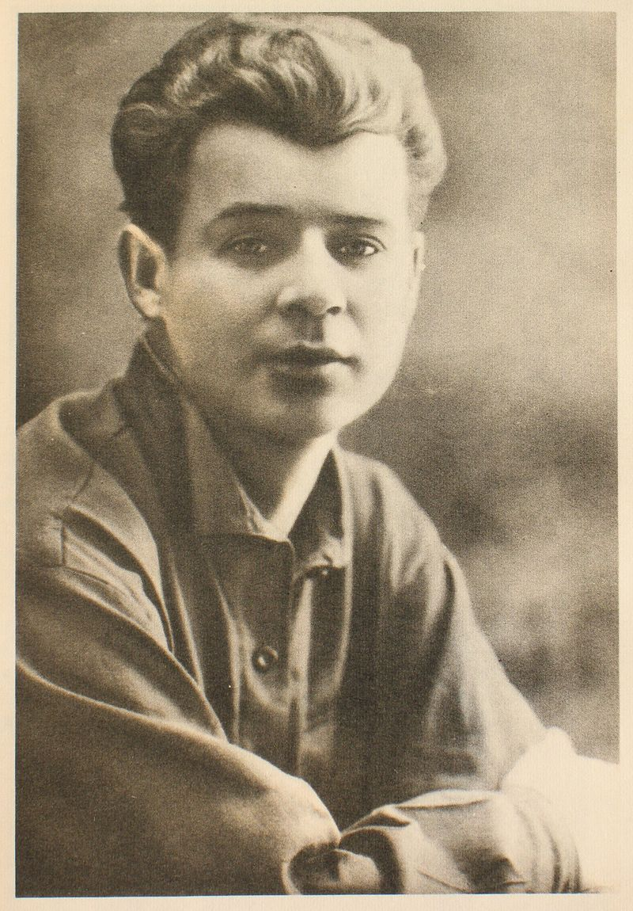

Биография
Родился Сергей Есенин в селе Константиново Кузьминской волости Рязанского уезда Рязанской губернии, в крестьянской семье. Отец — Александр Никитич Есенин (1873—1931), мать — Татьяна Фёдоровна Титова (1875—1955). Сёстры — Екатерина (1905—1977), Александра (1911—1981).Дом, где родился С. А. Есенин. Константиново
В 1904 году Есенин пошёл в Константиновское земское училище, по окончании которого в 1909 году начал учёбу в церковно-приходской, второклассной учительской школе (ныне музей С. А. Есенина) в Спас-Клепиках.
Память
Государственный музей-заповедник С. А. Есенина в Константиново (Рязанская область)
ГБУК г. Москвы «Московский государственный музей С. А. Есенина»
Музей Есенина в Спас-Клепиках (филиал ГМЗЕ)
Парк Есенина в Невском районе Санкт-Петербурга.
Народный музей Есенина С. А. в Воронеже (открытие 3 октября 2011 г.)
Портрет С.А. Есенина

© В.В. Кухарев